8.1 Green house effect, ozone depletion
8.2 Forestry
8.3 Deforestation
8.4 Afforestation
8.5 Alien invasive species
8.6 Conservation
8.7 Carbon Capture and Storage OPEN BRACKET CCS CLOSE BRACKET
8.8 Rain water harvesting
8.9 Environmental Impact Assessment OPEN BRACKET EIA CLOSE BRACKET
8.10 Geographic Information System
After understanding the structure and functions of major ecosystems of the world, now student community should observe and understand environmental problems of their surroundings at local, national and international level.
Now we are going to understand some of the environmental issues such as
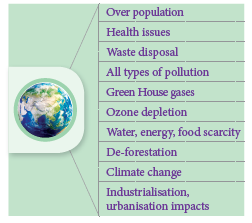
Figure 8.1: Environmental issues
Environmental issues are the problems and harmful effects created by human’s unmindful activity and over utilisation of valuable resources obtained from the nature OPEN BRACKET environment CLOSE BRACKET. Student should understand not only the environmental issues we are facing now, but also find solutions to rectify or reduce these problems.
Countries of the world agree that something needs to be done about these important environmental issues. Many global summits, conferences and conventions are regularly conducted by the United Nations and many steps are taken to minimise human-induced issues by signing agreements with around 150 countries.
Box item
Students may form ‘ECOGROUPS’ and discuss eco-issues of their premises and find solutions to the existing problems like, litter disposal, water stagnation, health and hygiene, greening the campus and its maintenance. Drastic increase in population resulted in demand for more productivity of food materials, fibres, fuels which led to many environmental issues in agriculture, land use
modifications resulting in loss of biodiversity, land degradation, reduction in fresh water availability and also resulting in man-made global warming by green house gases even altering climatic conditions.
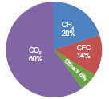
Figure 8.2: Relative contribution of greenhouse gases
Green House Effect is a process by which radiant heat from the sun is captured by gases in the atmosphere that increase the temperature of the earth ultimately. The gases that capture heat are called Green House Gases which include carbon dioxide OPEN BRACKET CO2 CLOSE BRACKET, methane OPEN BRACKET CH4 CLOSE BRACKET, Nitrous Oxide OPEN BRACKET N2O CLOSE BRACKET and a variety of manufactured chemicals like chlorofluorocarbon OPEN BRACKET CFC CLOSE BRACKET. Increase in greenhouse gases lead to irreversible changes in major ecosystems and climate patterns. For example, coral ecosystem is affected by increase in temperature, especially coral bleaching observed in Gulf of Mannar, Tamil Nadu.
Human activities lead to produce the green house effect by
Burning fossil fuels, which releases CO2 andCH4
Way of Agriculture and animal husbandry practices
Electrical gadgets like refrigerator and air conditioners release chloro fluoro carbons
The fertilizers used in Agriculture which release N2O
The emissions from automobiles.
The increase in mean global temperature OPEN BRACKET highest in 4000 years CLOSE BRACKET due to increased concentration of
green house gases is called global warming.
One of the reasons for this is over population which creates growing need for food, fibre and fuel and considered to be the major cause of global warming.
Box item
Clouds and Dust particles can also produce Green House effect. That is why clouds, dusts and humid nights are warmer than clear dust free dry nights.
Rise in global temperature which causes sea levels to rise as polar ice caps and glaciers begin to melt causing submergence of many coastal cities in many parts of the world.
There will be a drastic change in weather patterns bringing more floods or droughts in some areas.
Biological diversity may get modified, some species ranges get redefined. Tropics and sub-tropics may face the problem of decreased food production.
CO2 OPEN BRACKET Carbon dioxide CLOSE BRACKET
Coal based power plants, by the burning of fossil fuels for electricity generation.
Combustion of fuels in the engines of automobiles, commercial vehicles and air planes contribute the most of global warming.
Agricultural practices like stubble burning result in emission of CO2.
Natural from organic matter, volcanoes, warm oceans and sediments.
Methane
Methane is 20 times as effective as CO2 at trapping heat in the atomosphere. Its sources are attributed paddy cultivation, cattle rearing, bacteria in water bodies, fossil fuel production, ocean, non-wetland soils and forest or wild fires.
It is naturally produced in Oceans from biological sources of soil and water due to microbial actions and rainforests. Man-made sources include nylon and nitric acid production, use of fertilizers in agriculture, manures cars with catalytic converter and burning of organic matter.
Global Warming Effects on Plants
Low agricultural productivity in tropics
Frequent heat waves OPEN BRACKET Weeds, pests, fungi need warmer temperature CLOSE BRACKET
Increase of vectors and epidemics
Strong storms and intense flood damage
Water crisis and decreased irrigation
Change in flowering seasons and pollinators
Change in Species distributional ranges
Species extinction
Increasing the vegetation cover, grow more trees
Reducing the use of fossil fuels and green house gases
Developing alternate renewable sources of energy
Minimising uses of nitrogeneous fertilizers, and aerosols.
Ozone layer is a region of Earth’s stratosphere that absorbs most of the Sun’s ultra violet radiation. The ozone layer is also called as the ozone shield and it acts as a protective shield, cutting the ultraviolet radiation emitted by the sun.
Just above the atmosphere there are two layers namely troposphere OPEN BRACKET the lower layer CLOSE BRACKET and stratosphere OPEN BRACKET the upper layer CLOSE BRACKET. The ozone layer of the troposphere is called bad ozone and the ozone layer of stratosphere is known as good ozone because this layer acts as a shield for absorbing the UV radiations coming from the sun which is harmful for living organisms causing DNA damage. The thickness of the ozone column of air from the ground to the top of the atmosphere is measured in terms of Dobson Units.
The ozone shield is being damaged by chemicals released on the Earth’s surface notably the chlorofluorocarbons widely used in refrigeration, aerosols, chemicals used as cleaners in many industries. The decline in the thickness of the ozone layer over restricted area is called Ozone hole.
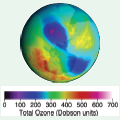
Figure 8.3: The false colour view of total ozone
Ozone is a colourless gas, reacts readily with air pollutants and cause rubber to crack, hurt plant life, damages lung tissues. But ozone absorbs harmful ultra violet Beta OPEN BRACKET uv-Beta CLOSE BRACKET and UV – alpha radiation from sunlight.
What is Dobson Unit QUESTION MARK DU is the unit of measurement for total ozone. One DU OPEN BRACKET 0.001 atm. cm CLOSE BRACKET is the number of molecules of ozone that would be required to create a layer of pure ozone 0.01 millimetre thick at a temperature of 0° C and a pressure of 1 atmosphere OPEN BRACKET atm IS EQUAL TO the air pressure at the surface of earth CLOSE BRACKET. Total ozone layer over the earth surface is 0.3 centrimetres OPEN BRACKET 3 mm CLOSE BRACKET thick and is written as 300 DU.
The false colour view of total ozone - The purple and blue colours are where there is the least ozone, and the yellows and reds are where there is more ozone.
September 16 is WORLD OZONE DAY
Ozone depletion in the stratosphere results in more UV radiations especially UV B radiations OPEN BRACKET shortwaves CLOSE BRACKET. UV B radiation destroys biomolecules OPEN BRACKET skin ageing CLOSE BRACKET and damages living tissues.
UV – C is the most damaging type of UV radiation, but it is completely filtered by the atmosphere OPEN BRACKET ozone layer CLOSE BRACKET. UV – a contribute 95 percentage of UV radiation which causes tanning burning of skin and enhancing skin cancer. Hence the uniform ozone layer is critical for the wellbeing of life on earth.
During 1970’s research findings indicated that man-made chlorofluorocarbons OPEN BRACKET CFC CLOSE BRACKET reduce and convert ozone molecules in the atmosphere. The threats associated with reduced ozone pushed the issue to the forefront of global climate issues and gained promotion through organisation such as World Meterological Organisation and the United Nations. The Vienna Convention was agreed upon at the Vienna conference of 1985 but entered into force in 1988 provided the frameworks necessary to create regulative measures in the form of the Montreal protocol. The International treaty called the Montreal Protocol OPEN BRACKET 1987 CLOSE BRACKET was held in Canada on substances that deplete ozone layer and the main goal of it is gradually eliminating the production and consumption of ozone
depleting substances and to limit their damage on the Earth’s ozone layer.
Clean Development Mechanism OPEN BRACKET CDM CLOSE BRACKET is defined in the Kyoto protocol OPEN BRACKET 2007 CLOSE BRACKET which provides project based mechanisms with two objectives to prevent dangerous climate change and to reduce green house gas emissions. CDM projects helps the countries to reduce or limit emission and stimulate sustainable development.
An example for CDM project activity, is replacement of conventional electrification projects with solar panels or other energy efficient boilers. Such projects can earn Certified Emission Reduction OPEN BRACKET CER CLOSE BRACKET with credits SLASH scores, each equivalent to one tonne of CO2, which can be counted towards meeting Kyoto targets.
The presence or absence of certain plants indicate the state of environment by their response. The plant species or plant community acts as a measure of environmental conditions, it is referred as biological indicators or phytoindicators or plant indicators.
Examples
|
Plants |
Indicator for |
1. |
Lichens, Ficus, Pinus, Rose |
SO2 pollution |
2. |
Petunia, Chrysanthemum |
Nitrate |
3. |
Gladiolus |
Flouride pollution |
4. |
Robinia pseudoacacia OPEN BRACKET Black locust tree CLOSE BRACKET |
Indicator of heavy metal contamination |
The main ozone depletion effects are:
Increases the incidence of cataract, throat and lung irritation and aggravation of asthma or emphysema, skin cancer and diminishing the functioning of immune system in human beings.
Juvenile mortality of animals.
Increased incidence of mutations.
In plants, photosynthetic chemicals will be affected and therefore photosynthesis will be inhibited. Decreased photosynthesis will result in increased atmospheric CO2 resulting in global warming and also shortage of food leading to food crisis.
Increase in temperature changes the climate and rainfall pattern which may result in flood SLASH drought, sea water rise, imbalance in ecosystems affecting flora and fauna.
Agroforestry is an integration of trees, crops and livestock on the same plot of land. The main objective is on the interaction among them . Example: intercropping of two or more crops between different species of trees and shrubs, which results in higher yielding and reducing the operation costs. This intentional combination of agriculture and forestry has varied benefits including increased bio-diversity and reduced erosion.
Some of the major species cultivated in commercial Agroforestry include Casuarina, Eucalyptus, Malai Vembu, Teak and Kadambu trees which were among the 20 species identified as commercial timber. They are of great importance to wood-based industries.
It is an answer to the problem of soil and water conservation and also to stabilise the soil OPEN BRACKET salinity and water table CLOSE BRACKET reduce landslide and water run-off problem.
Nutrient cycling between species improves and organic matter is maintained.
Trees provide micro climate for crops and maintain O2 – CO2 balanced, atmospheric temperature and relative humidity.
Suitable for dry land where rainfall is minimum and hence it is a good system for alternate land use pattern.
Multipurpose tree varieties like Acacia are used for wood pulp, tanning, paper and firewood industries.
Agro-forestry is recommended for the following purposes. It can be used as Farm Forestry for the extension of forests, mixed forestry, shelter belts and linear strip plantation.
The production of woody plants combined with pasture is referred to silvopasture system. The trees and shrubs may be used primarily to produce fodder for livestock or they may be grown for timber, fuel wood and fruit or to improve the soil.
This system is classified into following categories.
1. Protein Bank:
In this various multipurpose trees are planted in and around farm lands and range lands mainly for fodder production.
Example:
Acacia nilotica, Albizzia lebbek, Azadirachta indica, Gliricidia sepium, Sesbania grandiflora.
2. Livefence of fodder trees and hedges:
Various fodder trees and hedges are planted as live fence to protect the property from stray animals or other biotic influences.
Example: Gliricidia sepium, Sesbania grandiflora, Erythrina spp., Acacia spp..
It refers to the sustainable management of forests by local communities with a goal of climate carbon sequestration, change mitigation, depollution, deforestation, forest restoration and providing indirect employment opportunity for the youth. Social forestry refers to the management of forests and afforestation on barren lands with the purpose of helping the environmental, social and rural development and benefits. Forestry programme is done for the benefit of people and participation of the people. Trees grown outside forests by government and public organisation reduce the pressure on forests.
In order to encourage tree cultivation outside forests, Tree cultivation in Private Lands was implemented in the state from 2007-08 to 2011- 12. It was implemented by carrying out block planting and inter-crop planting with profitable tree species like Teak, Casuarina, Ailanthus, Silver Oak, etc. in the farming lands and by a free supply of profitable tree species for planting in the bunds. The Tank foreshore plantations have been a major source of firewood in Tamil Nadu. The 32 Forestry extension centres provide technical support for tree growing in rural areas in Tamil Nadu. These centres provide quality tree seedlings like thorn SLASH thornless bamboo, casuarinas, teak, neem, Melia dubia, grafted tamarind and nelli, etc. in private lands and creating awareness among students by training SLASH camps.
Training on tree growing methods
Publicity and propaganda regarding tree growing
Formation of demonstration plots
Raising and supply of seedlings on subsidy
Awareness creation among school children and youth about the importance of forests through training and camps.
Deforestation is one of the major contributors to enhance green house effect and global warming. The conversion of forested area into a non-forested area is known as deforestation. Forests provide us many benefits including goods such as timber, paper, medicine and industrial products. The causes are
The conversion of forests into agricultural plantation and livestock ranching is a major cause of deforestation.
Logging for timber
evelopmental activities like road construction, electric tower lines and dams.
Over population, Industrialisation, urbanisation and increased global needs.
Effects of deforestation
Burning of forest wood release stored carbon, a negative impact just opposite of carbon sequestration.
Trees and plants bind the soil particles. The removal of forest cover increases soil erosion and decreases soil fertility. Deforestation in dry areas leads to the formation of deserts.
The amount of runoff water increases soil erosion and also creates flash flooding, thus reducing moisture and humidity.
The alteration of local precipitation patterns leading to drought conditions in many regions. It triggers adverse climatic conditions and alters water cycle in ecosystem.
It decreases the bio-diversity significantly as their habitats are disturbed and disruption of natural cycles.
Loss of livelihood for forest dwellers and rural people.
Increased global warming and account for one-third of total CO2 emission.
Loss of life support resources, fuel, medicinal herbs and wild edible fruits.
Afforestation is planting of trees where there was no previous tree coverage and the conversion of non-forested lands into forests by planting suitable trees to retrieve the vegetation. Example: Slopes of dams afforested to reduce water runoff, erosion and siltation. It can also provide a range of environmental services including carbon sequestration, water retention.
Jadav "Molai" Payeng OPEN BRACKET born 1963 CLOSE BRACKET is an environmental activist has single-handedly planted a forest in the middle of a barren wasteland. This Forest Man of India has transformed the world’s largest river island, Majuli, located on one of India’s major rivers, the Brahmaputra, into a dense forest, home to rhinos, deers, elephants, tigers and birds. And today his forest is larger than
Central Park.
Former vice-chancellor of Jawahar Lal Nehru University, Sudhir Kumar Sopory named Jadav
Payeng as Forest Man of India, in the month of October 2013. He was honoured at the Indian Institute of Forest Management during their annual event ‘Coalescence’. In 2015, he was honoured
with Padma Shri, the fourth highest civilian award in India. He received honorary doctorate degree from Assam Agricultural University and Kaziranga University for his contributions.
To increase forest cover, planting more trees, increases O2 production and air quality.
Rehabilitation of degraded forests to increase carbon fixation and reducing CO2 from atmosphere.
Raising bamboo plantations.
Mixed plantations of minor forest produce and medicinal plants.
Regeneration of indigenous herbs SLASH shrubs.
Awareness creation, monitoring and evaluation.
To increase the level and availability of water table or ground water and also to reduce nitrogen leaching in soil and nitrogen contamination of drinking water, thus making it pure not polluted with nitrogen.
Nature aided artificial regeneration.
Achievements
Degraded forests were restored
Community assets like overhead tanks bore-wells, hand pumps, community halls, libraries, etc were established
Environmental and ecological stability was maintained.
Conserved bio-diversity, wildlife and genetic resources.
Involvement of community especially women in forest management.
Invasion of alien or introduced species disrupts ecosystem processes, threaten biodiversity, reduce native herbs, thus reducing the ecosystem services OPEN BRACKET benefits CLOSE BRACKET. During eradication of these species, the chemicals used increases greenhouse gases. Slowly they alter ecosystem, micro climate and nature of soil and make it unsuitable for native species and create human health problems like allergy, thus resulting in local environmental degradation and loss of important local species.
According to World Conservation Union invasive alien species are the second most significant threat to bio diversity after habitat loss.
What is invasive species QUESTION MARK
A non-native species to the ecosystem or country under consideration that spreads naturally, interferes with the biology and existence of native species, poses a serious threat to the ecosystem and causes economic loss.
It is established that a number of invasive species are accidental introduction through ports via air or sea. Some research organisations import germplasm of wild varieties through which also it gets introduced. Alien species with edible fruits are usually spread by birds. Invasive species are fast growing and are more adapted. They alter the soil system by changing litter quality thereby affecting the soil community, soil fauna and the ecosystem processes.
It has a negative impact on decomposition in the soils by causing stress to the neighbouring native species. Some of the alien species which cause environmental issues are discussed below
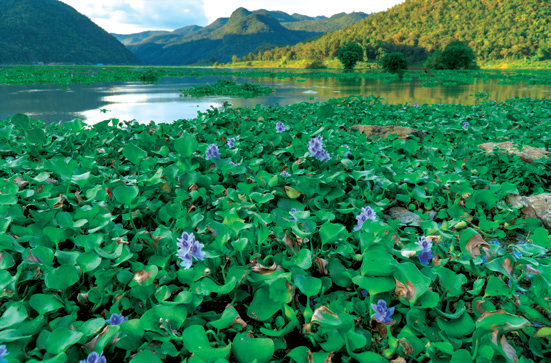
Figure 8.4: Eichhornia crassipes
It is an invasive weed native to South America. It was introduced as aquatic ornamental plant, which grows faster throughout the year. Its widespread growth is a major cause of biodiversity loss worldwide. It affects the growth of phytoplanktons and finally changing the aquatic ecosystem.
It also decreases the oxygen content of the waterbodies which leads to eutrophication. It poses a threat to human health because it creates a breeding habitat for disease causing mosquitoes OPEN BRACKET particularly Anopheles CLOSE BRACKET and snails with its free floating dense roots and semi submerged leaves. It also blocks sunlight entering deep and the waterways hampering agriculture, fisheries, recreation and hydropower.
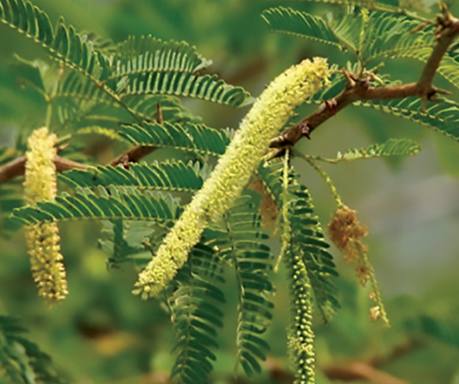
Figure 8.5: Prosopis juliflora
Prosopis juliflora is an invasive species native to Mexico and South America. It was first introduced in Gujarat to counter desertification and later on in Andhra Pradesh, Tamil Nadu as a source of firewood. It is an aggressive coloniser and as a consequence the habitats are rapidly covered by this species. Its invasion reduced the cover of native medicinal herbaceous species. It is used to arrest wind erosion and stabilize sand dunes on coastal and desert areas. It can absorb hazardous chemicals from soil and it is the main source of charcoal.
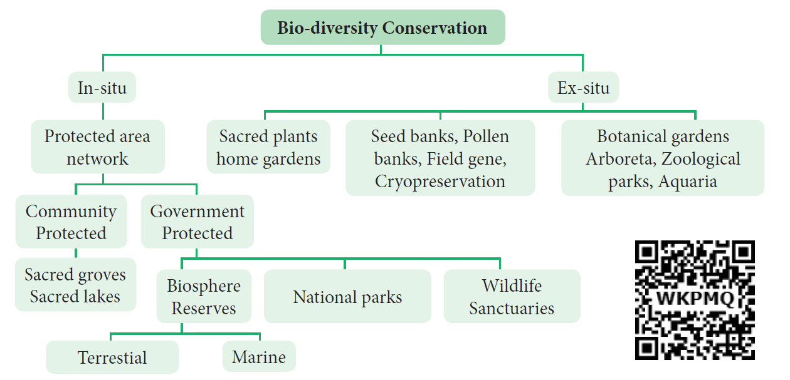
Figure 8.6: Flow chart on biodiversity conservation
India due to its topography, geology and climate patterns has diverse life forms. Now this huge diversity is under threat due to many environmental issues for this conservation becomes an important tool by which we can reduce many species getting lost from our native land. By employing conservation management strategies like germplasm conservation, in situ, ex-situ, in-vitro methods, the endemic as well as threatened species can be protected.
Conservation movement
A community level participation can help in preservation and conservation of our environment. Our environment is a common treasure for all the living organisms on earth. Every individual should be aware of this and participate actively in the programs meant for the conservation of the local environment. Indian history has witnessed many people movements for the protection of environment.
The tribal women of Himalayas protested against the exploitation of forests in 1972. Later on it transformed into Chipko Movement by Sundarlal Bahuguna in Mandal village of Chamoli district in 1974. People protested by hugging trees together which were felled by a sports goods company. Main features of Chipko movement were,
This movement remained non political
It was a voluntary movement based on Gandhian thought.
It was concerned with the ecological balance of nature
Main aim of Chipko movement was to give a slogan of five F’s – Food, Fodder, Fuel, Fibre and Fertilizer, to make the communities self sufficient in all their basic needs.
The famous Chipko Andolen of Uttarakhand in the Himalayas inspired the villagers of Uttar Karnataka to launch a similar movement to save their forests. This movement started in Gubbi
Gadde a small village near Sirsi in Karnataka by Panduranga Hegde. This movement started to protest against felling of trees, monoculture, forest policy and deforestation.
It means conservation and management of genetic resources in their natural habitats. Here the plant or animal species are protected within the existing habitat. Forest trees, medicinal and aromatic plants under threat are conserved by this method. This is carried out by the community or by the State conservation which include wildlife, National park and Biosphere reserve. The ecologically unique and biodiversity rich regions are legally protected as wildlife sanctuaries, National parks and Biosphere reserves. Megamalai, Sathyamangalam wildlife, Guindy and Periyar National park, and Western ghats, Nilgiris, Agasthyamalai and Gulf of Mannar are the biosphere reserves of Tamil Nadu.
These are the patches or grove of cultivated trees which are community protected and are based on strong religious belief systems which usually have a significant religious connotation for protecting community. Each grove is an abode of a deity mostly village God Or Goddesses like Aiyanar or Amman. 448 grooves were documented throughout Tamil Nadu, of which 6 groves OPEN BRACKET Banagudi shola, Thirukurungudi and Udaiyankudikadu, Sittannnavasal, Puthupet and Devadanam CLOSE BRACKET were taken up for detailed floristic and faunistic studies. These groves provide a number of ecosystem services to the neighbourhood like protecting watershed, fodder, medicinal plants and micro climate control.
It is a method of conservation where species are protected outside their natural environment. This includes establishment of botanical gardens, zoological parks, conservation strategies such as gene, pollen, seed, in-vitro conservation, cryo preservation, seedling, tissue culture and DNA banks. These facilities not only provide housing and care for endangered species, but also have educational and recreational values for the society.
Endemic species are plants and animals that exist only in one geographic region. Species can be endemic to large or small areas of the earth. Some are endemic to a particular continent, some to a part of a continent and others to a single island.
Any species found restricted to a specified geographical area is referred to as ENDEMIC.. It may be due to various reasons such as isolation, interspecific interactions, seeds dispersal problems, site specificity and many other environmental and ecological problems. There are 3 Megacentres of endemism and 27 microendemic centres in India. Approximately one third of Indian flora have been identified as endemic and found restricted and distributed in three major phytogeographical regions of india, that is Indian Himalayas, Peninsular India and Andaman nicobar islands. Peninsular India,especially Western Ghats has high concentration of endemic plants. Hardwickia binata and Bentinckia condapanna are good examples for endemic plants. A large percentage of Endemic species are herbs and belong to families such as Poaceae. Apiaceae, Asteraceae and Orchidaceae.
Endemic plants |
Habit |
Name of endemic centre |
Baccaurea courtallensis |
Tree |
Southern Western Ghats |
Agasthiyamalaia pauciflora |
Tree |
Peninsular india |
Hardwickia binata |
Tree |
Peninsular and northern India |
Bentinckia condappana |
Tree |
Western ghats of Tamil Nadu and kerala |
Nepenthes khasiyana |
Liana |
Khasi hills, Meghalaya |
Table 1: Endemic plants
Majority of endemic species are threatened due to their narrow specific habitat, reduced seed production, low dispersal rate, less viable nature and human intereferences.. Serious efforts need to be undertaken for their conservation, otherwise these species may become globally extinct.
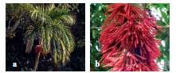
Figure 8.7: Endemic Plants
a. Bentinckia condapanna b. Baccaurea courtallensis
Carbon capture and storage is a technology of capturing carbondioxide and injects it deep into the underground rocks to a depth of 1 km or more and it is an approach to mitigate global warming by capturing CO2 from large point sources such as industries and power plants and subsequently storing it instead of releasing it into the atmosphere. Various safe sites have been selected for permanent storage in various deep geological formations, liquid storage in the Ocean and solid storage by reduction of CO2 with metal oxide to produce stable carbonates. It is also known as Geological sequestration which involves injecting CO2 directly into the underground geological
formations OPEN BRACKET such as declining oil fields, gas fields saline aquifers and unmineable coal have been suggested as storage sites CLOSE BRACKET.
Carbon sequestration is the process of capturing and storing CO2 which reduces the amount of CO2 in the atmosphere with a goal of reducing global climate change.
Carbon sequestration occurs naturally by plants and in ocean. Terrestrial sequestration is typically accomplished through forest and soil conservation practices that enhance the storage carbon.
As an example microalgae such as species of Chlorella, Scenedesmus, Chroococcus and Chlamydomonas are used globally for CO2 sequestration. Trees like Eugenia caryophyllata, Tecoma stans, Cinnamomum verum have high capacity and noted to sequester carbon. Macroalgae and marine grasses and mangroves are also have ability to mitigate carbon-di-oxide.
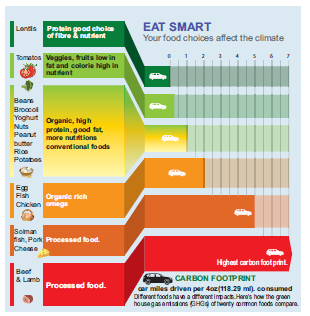
Figure 8.8: Carbon foot print
Every human activity leaves a mark just like our footprint. This Carbon foot print is the total amount of green house gases produced by human activities such as agriculture, industries, deforestation, waste disposal, buring fossil fuels directly or indirectly. It can be measured for an individual, family, organisation like industries, state level or national level. It is usually estimated and expressed in equivalent tons of CO2 per year. The burning of fossil fuels releases CO2 and other green house gases. In turn these emissions trap solar energy and thus increase the global temperature resulting in ice melting, submerging of low lying areas and inbalance in nature like cyclones, tsunamis and extreme weather conditions. To reduce the carbon foot print we can follow some practices like OPEN BRACKET 1 CLOSE BRACKET Eating indigenous fruits and products OPEN BRACKET 2 CLOSE BRACKET Reducing use of electronic devices OPEN BRACKET 3 CLOSE BRACKET Reduce travelling OPEN BRACKET 4 CLOSE BRACKET Avoid buying fast and preserved, processed, packed foods. OPEN BRACKET 5 CLOSE BRACKET Plant a garden OPEN BRACKET 6 CLOSE BRACKET Reducing consumption of meat and sea food. Poultry requires little space, nutrients and less pollution compared cattle farming. OPEN BRACKET 7 CLOSE BRACKET reducing use of Laptops OPEN BRACKET when used for 8 hours, it releases nearly 2 kg. of CO2 annually CLOSE BRACKET OPEN BRACKET 8 CLOSE BRACKET Line drying clothes. OPEN BRACKET Example: If you buy imported fruit like kiwi, indirectly it increases CFP. How QUESTION MARK The fruit has travelled a long distance in shipping or airliner thus emitting tons of CO2 CLOSE BRACKET
Biochar is another long term method to store carbon. To increase plants ability to store more carbon, plants are partly burnt such as crop waste, waste woods to become carbon rich slow decomposing substances of material called Biochar. It is a kind of charcoal used as a soil amendment. Biochar is a stable solid, rich in carbon and can endure in soil for thousands of years. Like most charcoal, biochar is made from biomass via pyrolysis. OPEN BRACKET Heating biomas in low oxygen environment CLOSE BRACKET which arrests wood from complete burning. Biochar thus has the potential to help mitigate climate change via carbon sequestration. Independently, biochar when added to soil can increase soil fertility of acidic soils, increase agricultural productivity, and provide protection against some foliar and soil borne diseases. It is a good method of preventing waste woods and logs from getting decayed and instead we can convert them into biochar thus converting them to carbon storage material.
Any system having the capacity to accumulate more atmospheric carbon during a given time interval than releasing CO2.
Example: forest, soil, ocean are natural sinks. Landfills are artificial sinks.
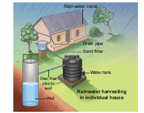
Figure 8.9: Pictures of Rain Water Harvesting Structures in Ooraniers
Rainwater harvesting is the accumulation and storage of rain water for reuse in-site rather than allowing it to run off. Rainwater can be collected from rivers, roof tops and the water collected is directed to a deep pit. The water percolates and gets stored in the pit. RWH is a sustainable water management practice implemented not only in urban area but also in agricultural fields, which is an important economical cost effective method for the future.
Promotes adequacy of underground water and water conservation.
Mitigates the effect of drought.
Reduces soil erosion as surface run-off is reduced.
Reduces flood hazards.
Improves groundwater quality and water table SLASH decreases salinity.
Avoid land wastage for storage purpose and no population displacement is involved.
Stores water underground as an eco-friendly measure and us a part of sustainable water storage strategy for local communities.
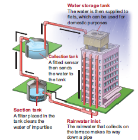
Figure 8.10: Rain Water Harvesting Structures in Water Supply sources
Water bodies like lakes, ponds not only provide us a number of environmental benefits but they strengthen our economy as well as our quality of life like health. Lakes as a storage of rain water provide drinking water, improves ground water level and preserve the fresh water bio-diversity and habitat of the area where it occurs.
In terms of services lakes offer sustainable solutions to key issues of water management and climatic influences and benefits like nutrient retention, influencing local rainfall, removal of pollutants, phosphorous and nitrogen and carbon sequestration.
Environmental Impact Assessment is an environmental management tool. It helps to regulate and recommend optimal use of natural resources with minimum impact on ecosystem and biotic communities. It is used to predict the environmental consequences of future proposed developmental projects OPEN BRACKET example: river projects, dams, highway projects CLOSE BRACKET taking into account inter-related socio-economic, cultural and human-health impacts. It reduces environmental stress thus helping to shape the projects that may suit local environment by ensuring optimal utilization of natural resources and disposal of wastes to avoid environmental degradation.
The benefits of EIA to society
A healthier environment
Maintenance of biodiversity
Decreased resource usage
Reduction in gas emission and environment damage
The act of observing and assessing the current state and ongoing changes in ecosystem, biodiversity components, landscape including natural habitats, populations and species. An agricultural drone is an unmanned aerial vehicle applied to farming in order to help increased crop production and monitor crop growth. Agricultural drones let farmers see their fields from the sky. This bird’s eye-view can reveal many issues such as irrigation problems, soil variation and pest and fungal infestations. It is also used for cost effective safe method of spraying pesticides and fertilizers, which proves very easy and non-harmful.
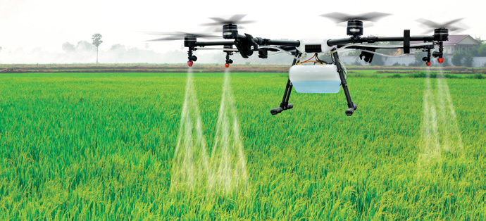
Figure 8.11: Agricultural drone
Biodiversity Impact Assessment can be defined as a decision supporting tool to help biodiversity inclusive of development, planning and implementation. It aims at ensuring development
proposals which integrate biodiversity considerations. They are legally compliant and include mechanisms for the conservation of bio-diversity resources and provide fair and equitable sharing of the benefits arising from the use of bio-diversity.
Bio-diversity impacts can be assessed by
Change in land use and cover
Fragmentation and isolation
Extraction
External inputs such as emissions, effluents and chemicals
Introduction of invasive, alien or genetically modified species
Impact on endemic and threatened flora and fauna.
GIS is a computer system for capturing, storing, checking and displaying data related to positions on Earth’s surface. Also to manipulate, analyse, manage and present spacial or geographic data.
GPS is a satellite navigation system used to determine the ground position of an object. It is a constellation of approximately 30 well spaced satellites that orbit the earth and make it possible for the people with ground receivers to pinpoint their geographic location. Some applications in which GPS is currently being used for around the world include Mining, Aviation, Surveying Agricultural and Marine ecosystem.
Environmental impact assessment
Disaster management
Zoning of landslide hazard
Determination of land cover and land use
Estimation of flood damage
Management of natural resources
Soil mapping
Wetland mapping
Irrigation management and identification of volcanic hazard
Vegetation studies and mapping of threatened and endemic species.
Remote Sensing is the process of detecting and monitoring the physical characteristics of an area by measuring its reflected and emitted radiation at a distance from the targeted area. It is an tool used in conservation practices by giving exact picture and data on identification of even a single tree to large area of vegetation and wild life for classification of land use patterns and studies, identification of biodiversity rich or less areas for futuristic works on conservation and maintenance of various species including commercial crop, medicinal plants and threatened plants.
Helps predicting favourable climate, for the study of spreading of disease and controlling it.
Mapping of forest fire and species distribution.
Tracking the patterns of urban area development and the changes in Farmland or forests over several years
Mapping ocean bottom and its resources
Applications of Satellites
Name of the Satellites |
Year of Launch |
Application |
SCATSAT – 1 |
Sep. 2016 |
Weather forecasting, cyclone prediction and tracking services in India |
INSAT 3DR |
Sep. 2016 |
Disaster management |
CARTOSAT – 2 |
Jan. 2018 |
Earth observation |
GSAT – 6A |
March 2018 |
Communication |
CARTOSAT – 2 OPEN BRACKET hundredth Satellite CLOSE BRACKET |
Jan. 2018 |
To watch border surveillance |
Green house effect leads to climate change which results in global warming. Deforestation causes soil erosion, whereas Afforestation helps to restore vegetation and increases ground water table. Regeneration of trees by Agroforestry is possible with the involvement of community and government. Help to conserve the flora and fauna in their natural habitat and man-made environments like zoological parks and national parks. Mitigation of carbon in the atmosphere done in the form of sequestration. Rain water harvesting is done for improving the ground water table. Importance and location of lakes in Tamil Nadu which aids water supply to the city is a measure of conservation of drinking water. Assessment of Environment and Biodiversityhelps to study risk analysis and disaster management. Forest cover is monitored through Remote sensing and GIS.
1. Which of the following would most likely help to slow down the greenhouse effect.
a CLOSE BRACKET Converting tropical forests into grazing land for cattle.
b CLOSE BRACKET Ensuring that all excess paper packaging is buried to ashes.
c CLOSE BRACKET Redesigning landfill dumps to allow methane to be collected.
d CLOSE BRACKET Promoting the use of private rather than public transport.
2. With respect to Eichhornia
Statement A: It drains off oxygen from water and is seen growing in standing water.
Statement B: It is an indigenous species of our country.
a CLOSE BRACKET Statement A is correct and Statement B is wrong.
b CLOSE BRACKET Both Statements A and B are correct.
c CLOSE BRACKET Statement A is correct and Statement B is wrong.
d CLOSE BRACKET Both statements A and B are wrong.
3. Find the wrongly matched pair.
a CLOSE BRACKET Endemism - Species confined to a region and not found anywhere else.
b CLOSE BRACKET Hotspots - Western ghats
c CLOSE BRACKET Ex-situ Conservation - Zoological parks
d CLOSE BRACKET Sacred groves - Saintri hills of Rajasthan
e CLOSE BRACKET Alien sp. Of India - Water hyacinth
4. Depletion of which gas in the atmosphere can lead to an increased incidence of skin cancer QUESTION MARK
a CLOSE BRACKET Ammonia
b CLOSE BRACKET Methane
c CLOSE BRACKET Nitrous oxide
d CLOSE BRACKET Ozone
5. One green house gas contributes 14 percentage of total global warming and another contributes 6 percentage.
These are respectively identified as
a CLOSE BRACKET N20 and CO2
b CLOSE BRACKET CFCs and N20
c CLOSE BRACKET CH4 and CO2
d CLOSE BRACKET CH4 and CFCS
6. One of the chief reasons among the following for the depletion in the number of species
making endangered is
a CLOSE BRACKET over hunting and poaching
b CLOSE BRACKET green house effect
c CLOSE BRACKET competition and predation
d CLOSE BRACKET habitat destruction
7. Deforestation means
a CLOSE BRACKET growing plants and trees in an area where there is no forest
b CLOSE BRACKET growing plants and trees in an area where the forest is removed
c CLOSE BRACKET growing plants and trees in a pond
d CLOSE BRACKET removal of plants and trees
8. Deforestation does not lead to
a CLOSE BRACKET Quick nutrient cycling
b CLOSE BRACKET soil erosion
c CLOSE BRACKET alternation of local weather conditions
d CLOSE BRACKET Destruction of natural habitat weather conditions
9. The unit for measuring ozone thickness
a CLOSE BRACKET Joule
b CLOSE BRACKET Kilos
c CLOSE BRACKET Dobson
d CLOSE BRACKET Watt
10. People’s movement for the protection of environment in Sirsi of Karnataka is
a CLOSE BRACKET Chipko movement
b CLOSE BRACKET Amirtha Devi Bishwas movement
c CLOSE BRACKET Appiko movement
d CLOSE BRACKET None of the above
11. The plants which are grown in silivpasture system are
a CLOSE BRACKET Sesbania and Acacia
b CLOSE BRACKET Solenum and Crotalaria
c CLOSE BRACKET Clitoria and Begonia
d CLOSE BRACKET Teak and sandal
12. What is ozone hole QUESTION MARK
13. Give four examples of plants cultivated in commercial agroforestry.
14. Expand CCS.
15. How do forests help in maintaining the climate QUESTION MARK
16. How do sacred groves help in the conservation of biodiversity QUESTION MARK
17. Which one gas is most abundant out of the four commonest greenhouse gases QUESTION MARK Discuss
the effect of this gas on the growth of plants QUESTION MARK
18. Suggest a solution to water crisis and explain its advantages.
19. Explain afforestation with case studies.
20. What are the effects of deforestation and benefits of agroforesty QUESTION MARK
Algae Blooms:
Sudden sprout of algae growth, which can affect the water quality adversely and indicate potentially hazardous changes in local water chemistry.
Atmosphere:
A major regional community of plants and animals with similar life forms and environmental conditions.
Biodegradable waste:
Organic waste, typically coming from a plant or animal sources, which other living organisms can break done.
Biosphere:
The portion of earth and its atmosphere that can support life.
Oil spill:
The harmful release of oil into the environment, usually through water, which is very difficult to clean up and often kills, birds, fish and other wildlife.
Radiation:
A form of energy that is transmitted in waves, rays or particles from a natural source such as the sun and the ground or an artificial source such as an X-ray machine.
A materials is said to be radioactive if it emits radiation.
Recycle:
To break waste items done into their raw materials, which are then used to remake the original item or to make new items.
Sustainable development:
Development using hand of energy sources in a way that meets the needs of people today without reducing the ability in future generation to meet their own needs.
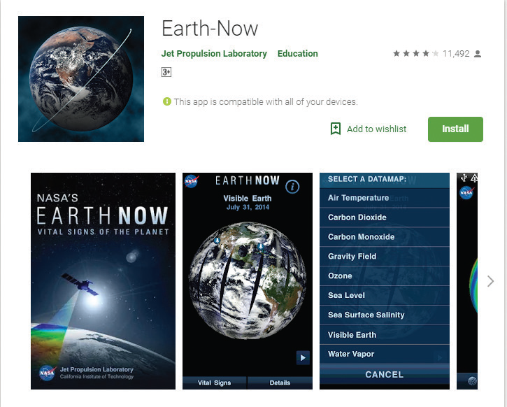
Environmental Issues
Let us know about the Environmental issues using the EARTH NOW app through this activity
Steps
Type the URL or scan the QR code to open the activity page.
Click on the satellite it displays the shape and activities of the satellite.
Click on the Vital Signs to see the global Climate data including surface air temperature, Carbondioxide, Ozone, etc.,
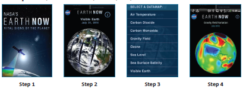
URL:https:SLASHSLASHplay.google.comSLASHstoreSLASHappsSLASHdetails QUESTION MARKid=gov.nasa.jpl.earthnow.activity